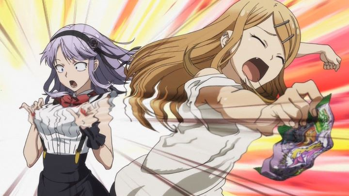

It seems you can make an anime about anything. Of course, Japanese anime has long proven that all kinds of age groups and demographics can be catered to, and with the sheer amount being produced commercially (nearly 100 shows per year in the mid 2010's), it's easy to run out of ideas and scramble to less obvious topics. "Dagashi Kashi" is a show about candy. It's not a fantasy about being in a magical candy land or an adventure about making candy. It's... just a show about Japanese candy.The show takes place out in the boonies of some small Japanese town. Kokonutsu (nicknamed "Coconuts" by his friends) is a teenager who gets roped in to help out with his Dad's local candy store every now and then, even though he has aspirations to be a manga artist. One day, a mysterious woman (about Kokonutsu's age) named Hotaru comes into town and straight to their shop. She is the daughter of a large candy corporation, and made a visit to personally recruit Kokonutsu's father. He insists he couldn't abandon his shop (despite doing so regularly), but says he would consider the offer if his son agrees to take up the family business in his place. And so, the entire show consists of Hotaru hanging out with Kokonutsu, trying to convince him about the magic of "Dagashi" and to get him to be as passionate as she is about the food genre.It's a bare-bones plot device to setup a series of unconnected vignettes about Dagashi. The word "Dagashi" refers to Japanese candy, but seems to include variety store junk-food in general, from sour gum to sweet chocolate, from salty potato chips to savoury fried snacks. Small candy stores even sell a couple simple toys, and they get some credit too. However, most candy common in North America or Europe isn't traditional in Japan. Instead, there are a wide variety of snacks, some loosely familar, others entirely unique to their region. Many also have unique brand names and mascots, with inspiring stories behind their creation, or clever mythos and culture around what they represent or how to eat them. If you didn't grow up in Japan, chances are you don't know about any of it. Don't worry, "Dagashi Kashi" will fill you in, as through two to four vignettes per episode, each focusing on a specific Dagashi, the show will educate you behind the wonderous world of sweets!Quite literally, this is a weirdly educational show. You might assume the candy featured is generic (like saying "peanut butter cup" instead of "Reese's chocolate"), but each episode always caps with a fun fact minute with live-action footage of brand-name candy. I don't know what copyrights are involved here... maybe the show is really a giant sponsored commercial? Japan seems strangely proud about all aspects of their culture, both traditional and modern. Not just samurai and sakura cherry blossoms, but also themed cafes and 100 yen stores. Yes, we have "dollar stores" in America and Canada, and 100 yen stores are basically the same, but they are commonly cited as a feature for any tourist to learn about. I do admit learning about Dagashi was more entertaining than I thought, although it was obvious they were starting to run out of ideas about half way through the show.So rather than being simply an educational show, "Dagashi Kashi" is marketed as a comedy. Some of the jokes work, but most of them don't carry well in the English language, and it doesn't help that the show has weird pacing, being made up of separate vignettes that feel like sketch comedy. Much of the entertainment relies on the cast of characters. In this show, that's a pretty bland cast, including the eccentric guide, a rebellious son, a lazy father, the childhood friend with a secret crush on the main character, and the best-friend-slash-hormone-fueled perverted teen. Basically your standard one-dimensional archtypes.  Hotaru is the poster child of the show, and she is... a character. Dressed in a short-sleeved set of frilly-Victorian-style dresses and pale-purple hair, she stands out. She has a hyper passion for all things Dagashi, trying to extrude her love at all times, even for the simplest foods. She also occasionally gets used for minor fan-service, thanks to her large breasts and suggestive attitude towards eating. If that's your reason for watching, the fan-service is sparse and tame enough to simply feel juvenille, although a good joke or two comes from it. A lot hinges on enjoying Hotaru, and the most I can really say is that she is entertaining, even if it's due to how random or energetic she is rather than her being a great character.Despite it all, I did have fun with "Dagashi Kashi." I think I attribute that mainly to the strange educational premise, and to the side characters. It's fun to see the girlfriend recall fond memories of her childhood when she developed a crush on Kokonatsu. It's endearing to see Kokonatsu hanging out with his best friend by the beach, talking about how to be popular. There isn't anything particularly special about them, but everyone is likable enough to get by, and I didn't mind marathoning the show in a couple sessions.That sort-of "good-enough" attitude applies throughout the production. The animation is minimal, meeting standards of the average anime while not straining to add impressive scenes or environments. The visuals are similar, utilizing filtered photos of real candy to make rendering detailed junk food easier. The character designs will look slightly different to most others, due entirely to the eyes: unlike most other anime, the iris of each character are particularly small, with the pupil a black dot in the center. It makes everyone look bug-eyed. Hotaru's pupils are slightly larger, but only to draw extra circles in her iris to make her eyes seem more... mesmorizing? It's an accquired taste that might be dismissed as weird, but I ultimately appreciated the difference and even liked it after a while. The music is fine, but largely forgettable, just sitting in the background to everyday antics. The English dub was a bit of a miss for me. Todd Haberkorn's nasly voice seems well suited for Kokonatsu, but it felt a little frustrating when paired with a indecisive character, highlighting that the character has a lot of growing up to do. Tabitha Ray had a difficult job trying to voice Hotaru, but confusingly gives her a mix of Willy Wonka, Minnie Mouse, and a country farmer. The voice is a little TOO eccentric to follow. I would certainly recommend the original and more subtle Japanese dub, but a lot of descriptive text has to be quickly read in subtitles, and a few jokes actually work better in English thansk to clever script writing. Comedy is hard to translate well from Japan to overseas, and "Dagashi Kashi" is defintely an example of that. It's unique premise does make it stand out as one of the more memorable series of its year, but it also severely limits any potential it has. It's still reasonably pleasent to watch, like hanging out with your friends on a lazy summer day in a small town. I just can't find a good reason to convice others to visit that town in particular.
- "Ani" More reviews can be found at : https://2danicritic.github.io/ Previous review: review_D-Frag! Next review: review_Dan_Da_Dan